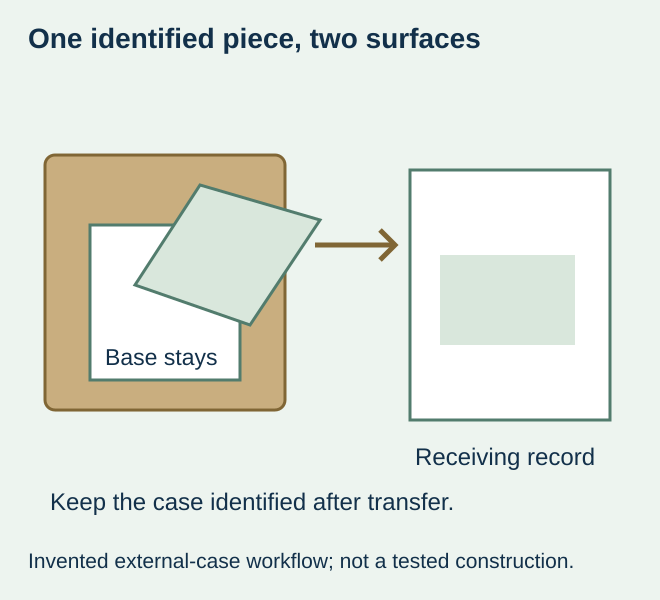
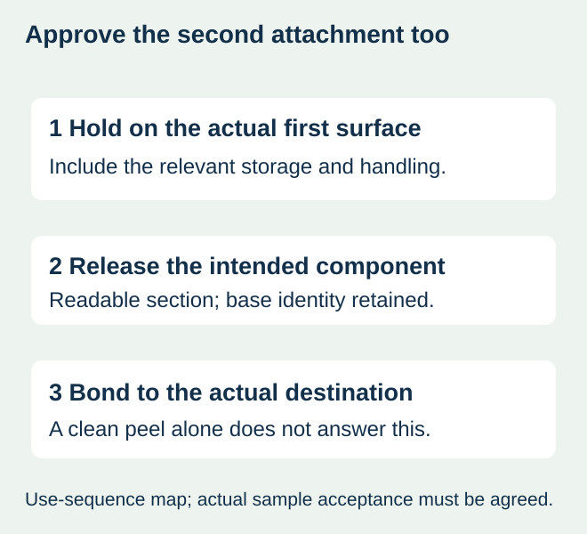

If a piece must be peeled from a food shipment and stuck somewhere else, specify both its release and its second attachment. A peel-open information panel, an easily removable label and a purpose-designed transferable label answer different questions. The top piece coming away cleanly does not establish that it can complete the second job.
Consider a hypothetical receiving process: a warehouse removes an identification section from an external food case and places it on a paper receiving record. This is a derived planning example, not a verified customer practice or a legal traceability requirement. Start by checking whether the operation actually needs physical transfer; a separate record label or a supported data capture process may be simpler.


Decide what moves and what stays
| Part of the sequence | Requirement to write | Unresolved if only “peelable” is specified |
|---|---|---|
| First attachment | Actual external case/container surface and holding conditions | Whether the base remains attached until the intended action |
| Separation | Which section the receiving user removes and how it is identified | Whether the correct layer releases without losing the required information |
| Second attachment | Actual paper, plastic or other destination and intended holding interval | Whether the removed piece has suitable remaining adhesive and usable geometry |
| Identity after transfer | Data retained on the case and on the removed piece | Whether either object becomes ambiguous after the action |
Avery Dennison’s 2021 Custom Label Constructions technical guide describes piggyback structures intended for reapplying all or part of a label elsewhere, including logistics and tracking uses. That establishes a construction category, not the availability, food-contact suitability or performance of a proposed ZFU product.
Compare transfer with a separate duplicate
When the action must preserve a physical connection between the arriving object and the record, a transferable section may be worth investigating. It still needs a controlled identity and a representative sample. When the receiving process can reliably pair two separate pieces, ask whether a standard case label plus a duplicate record label answers the need with less construction complexity.
A duplicate is not automatically equivalent: loose pieces can be mixed, while a missing transfer section can leave the case without information if the layout was poorly defined. Compare the actual handling step and the information that remains on each object. Do not select a specialty construction solely because it sounds more traceable.


| Route to compare | Potential fit | Evidence needed |
|---|---|---|
| Transferable section on a base | A user takes the identified section directly from the arriving case | Correct separation, second-surface attachment and remaining case identity |
| Separate case and record labels | The process can maintain the intended pairing without physical transfer | Pairing control, quantity/allocation and receiving workflow |
| Peel-open extended content | Information must be read while its panel stays with the package | Opening/readability/reclosure as applicable; not presumed reapplication |
A sample must travel through the complete sequence
Mark the initial package, the removable section, the part that stays and the actual destination. Use visibly different reference marks on a nonproduction drawing so reviewers can discuss the layers without confusing the print face and reverse. Ask the converter to identify the actual proposed adhesive interfaces; the purchaser should not invent a layer recipe from the diagram.
Agree how the identified sample will represent application, storage, transit handling, removal and transfer. Include the relevant cold, moisture or surface variation when it is genuinely part of the job. A demonstration on clean office paper does not answer attachment to a damp plastic receiving sleeve. Record those as different destinations rather than call both “the receiving document.”
Assess the piece after it is lifted and after it reaches the destination: readable data, relevant edge condition, actual attachment and any damage or residue important to the agreed use. The responsible parties must define methods and acceptance; no universal peel force, time interval or repeated-transfer capability is supplied here.
Keep the data link separate from the adhesive result
If both parts carry an identifier, verify the approved correspondence at the required production stage. The base and removable portion need not have identical layouts, but their intended relationship must be explicit. Confirm what happens when a piece is missing, damaged or taken from the wrong case; a neatly printed identifier does not correct a handling mismatch.
The linked lot-record guide addresses relationships between actual label supplies and finished runs. This article addresses a different physical event: moving an identified label component to another surface. It does not establish a complete traceability system, a recall scope or regulatory compliance.
Quote the whole function, not just the visible top face
Request the complete component dimensions, printed sides, transferable area, supplied format and quantity basis, along with the actual sample scope. Ask the supplier to disclose any differences between the demonstration material and production proposal. Availability, minimum quantity, conversion work and price need confirmation for that construction.
If the required transfer cannot be supported, compare the separate-label option with the process owner. Do not approve a visually similar peel-open panel and hope it will stick later. For a food project, keep any material-contact review tied to the real package and intended location; a generic food-industry statement does not authorize a new contact arrangement.
Discuss the unresolved label requirement
Send the external case/container surface and destination surface, the data that must move or remain, peel area and complete dimensions, handling/storage sequence, quantities and whether a duplicate loose label is acceptable. Ask which construction and representative sample can be offered; special layered supply is not assumed available. Review the food-label product scope and prepare a label specification inquiry. The contact page opens an email draft and lists email or WhatsApp for attachments. Supply, proof options, testing, pricing and timing require project confirmation.